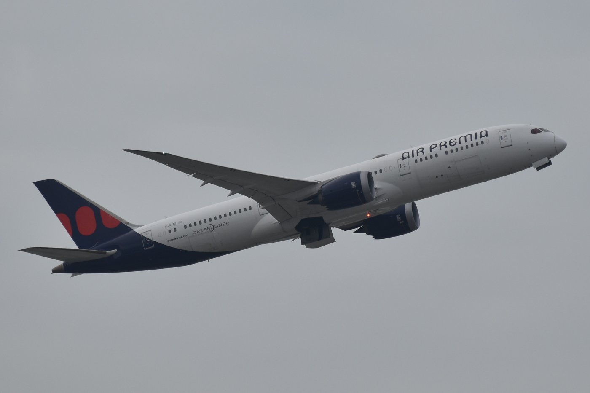

에어프레미아, 좌석 18석 줄여 이코노미 앞뒤 간격 33인치로
HL8703 좌석 344석→326석, 5.2% 감소
카펫도 가벼운 제품으로 바꿔 연료 절감 기대
남은 344석 1대는 2027년 상반기 조정
AI경제저널=김갑봉 기자 | 에어프레미아는 HL8703 항공기의 이코노미 클래스 좌석 간격을 31인치에서 33인치로 넓혔다고 2일 밝혔다. 좌석 조정은 10월 중순부터 진행했고, 작업을 마친 항공기는 지난달 31일부터 운항하고 있다.
좌석 간격을 2인치 넓히면서 이 항공기의 좌석은 344석에서 326석으로 18석 줄었다. 약 5.2% 감소다.
좌석 줄여 장거리 편의 높인다
에어프레미아는 좌석 공급 규모와 고객 편의를 함께 고려한 결정이라고 설명했다. 좌석이 줄더라도 장거리 비행에서 승객이 느끼는 공간을 넓히는 데 중점을 뒀다고 했다.

좌석 조정과 함께 기내 카펫도 새 디자인으로 바꿨다. 디지털 프린트 기술로 브랜드 정체성을 담았고, 기존보다 가벼운 카펫을 써 항공기 무게를 줄였다. 회사는 연료 소비와 탄소 배출 저감 효과도 기대한다고 밝혔다.
9대 가운데 344석은 1대 남아
에어프레미아는 2024년 항공기 두 대를 시작으로 올해 3월, 이번 HL8703까지 이코노미 좌석 간격을 단계적으로 넓혀 왔다.
지금 운영하는 항공기는 9대다. 좌석 구성은 309석 3대, 320석 2대, 326석 3대, 344석 1대다. 344석 1대는 해외 정비 일정 등을 고려해 2027년 상반기 안에 좌석을 조정할 계획이다.
에어프레미아 관계자는 "장거리 노선에서는 기내에서 보내는 시간이 긴 만큼 좌석 공간과 기내 환경이 고객의 여행 경험에 중요한 요소"라고 말했다.
참고문헌
- "에어프레미아, 좌석 18석 줄여 이코노미 공간 넓혔다", 에어프레미아, 2026.11.2.
[사진 출처]
- [사진1] Dltl2010, "HL8701 (6 Oct 2026).jpg", 위키미디어 공용, CC0, 2026.10.6. 촬영, https://commons.wikimedia.org/wiki/File:HL8701_(6_Oct_2026).jpg
관련기사
- 델타항공, 태평양 노선 기내 와이파이 무료…'플라이 델타' 앱 국내 서비스 재개
- 서산에 UAM 핵심부품 시험평가센터 완공…2027년부터 기업 지원
- 한국공항공사, 울진비행교육훈련원서 항공정비 특성화고 학생 23명 진로 교육
- 한국공항공사, 발달장애인 작가 16명 전시 「지금, 탑승을 시작합니다」
저작권자 © AI경제저널 무단전재 및 재배포, AI학습 및 활용 금지